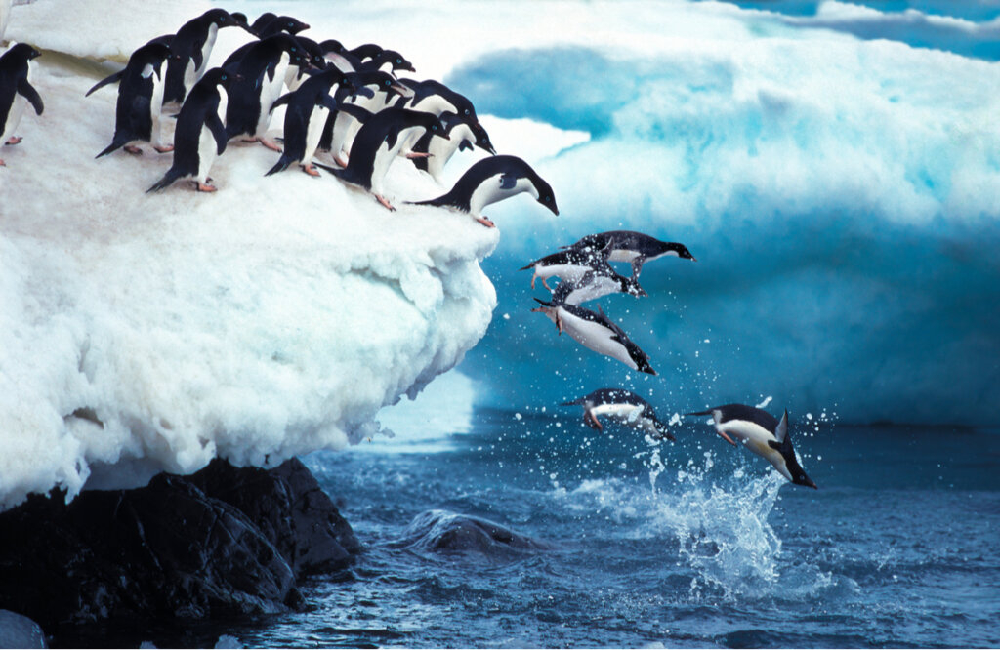
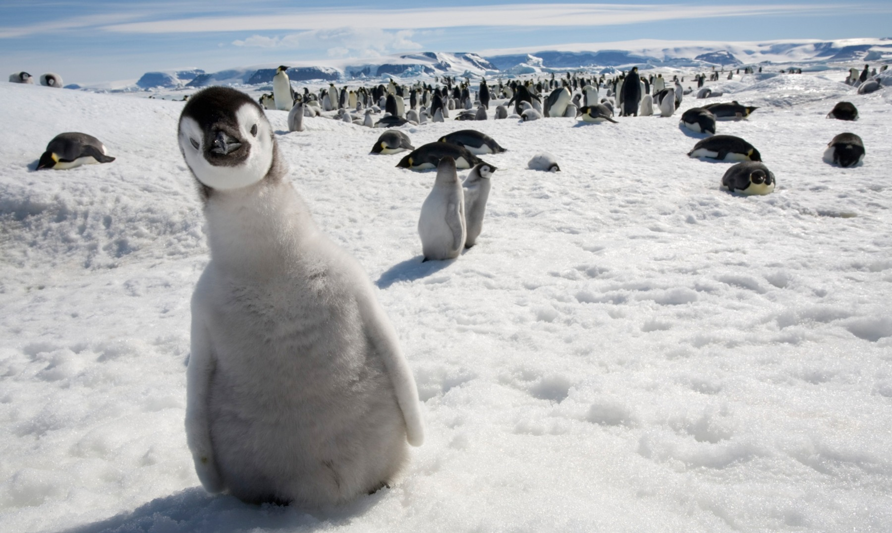
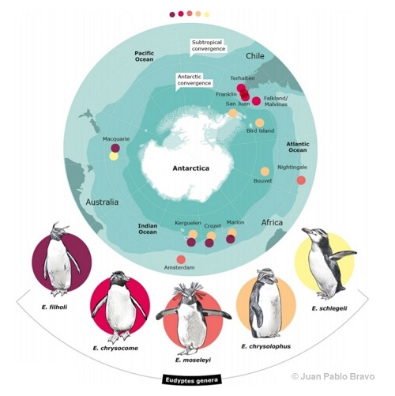
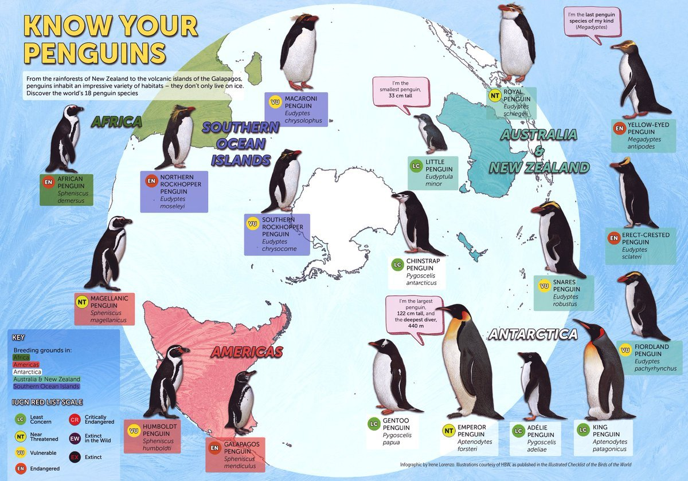
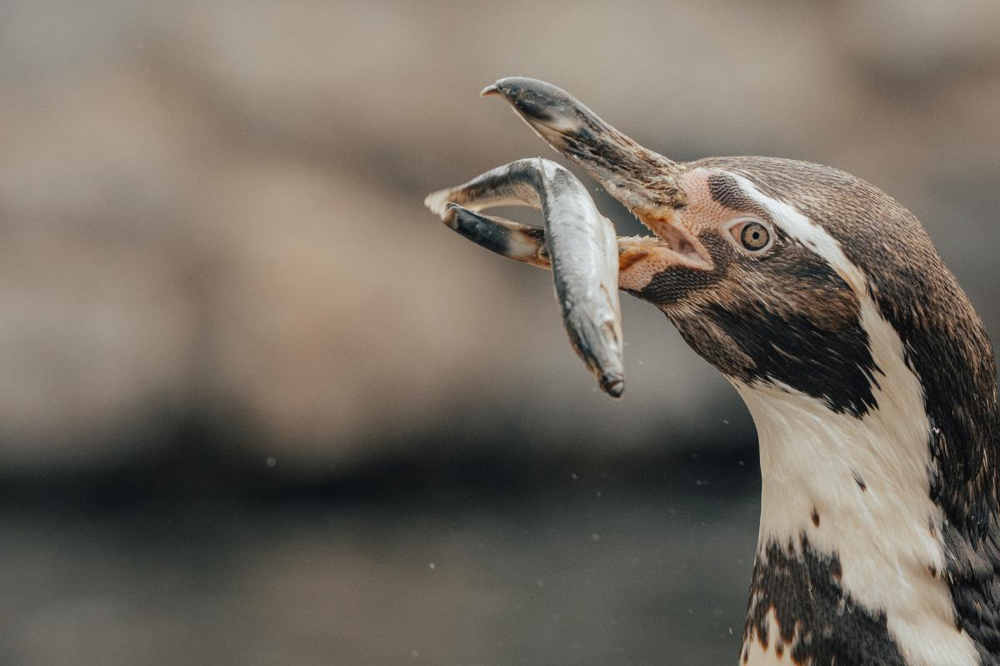
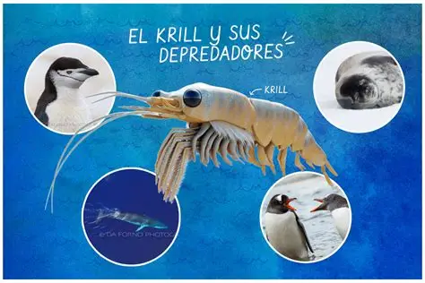
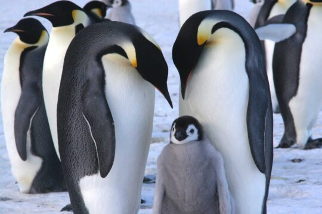

Información general:
Los pingüinos son aves marinas de la familia spheniscidae siendo casi exclusivas del hemisferio sur, existiendo alrededor de 18 especies diferentes agrupadas en 6 géneros distintos, todas descendientes de los plolotpéridos. Son aves sociales, habiendo desde un par de cientos a varios miles de individuos por colonia.


Hábitat y ubicación
Como mencioné anteriormente, son casi exclusivamente del hemisferio sur del planeta, su única excepción son los pingüinos de galápagos en ecuador, las especies ubicadas en el continente antártico representan el 80% de la biomasa de la región, existiendo colonias de pingüinos en: costa de Nueva Zelanda, Antártida, Argentina, Chile, Perú, Suráfrica, región sur de Australia e islas subantárticas.


Alimentación
Su dieta consiste fundamentalmente en peces y cefalópodos cazados en sus inmersiones. Algunas especies de pingüinos se adaptaron a la ingesta de zooplancton y pequeños crustáceos. Todos por igual, además de otras especies marinas, poseen una glándula especializada que permite eliminar el exceso de sal en el agua marina consumida.


Reproducción
Estas aves son de reproducción sexual poniendo los huevos ya fecundados (ovíparos), independiente de la especie no suelen presentar un dimorfismo sexual notorio, pero si tienen dinámicas de cortejo y elaboración del nido, cabe destacar que los pingüinos emperador no forman nidos, sino que retiene el huevo contra su cuerpo hasta que de este nazca un pequeño pingüino. Lo mas común es que cada pareja de pingüinos ponga solo un huevo.
